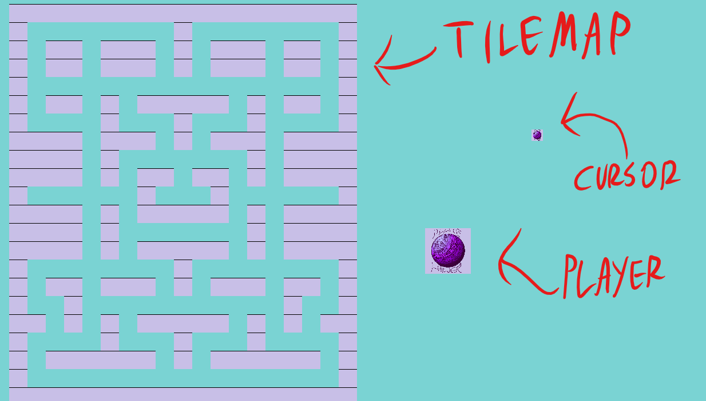
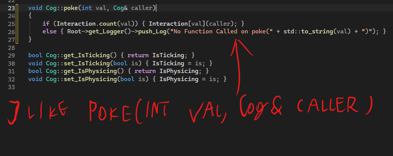

BallEngine

{kind=link}

{kind=link}
Info
About 1.5 years of doing the impossible! That much time to acknowledge the fact, that I may be not enough suitable to make whole framework from scratch. Although it was one of the most solid works I did, because of how much i learned here. Today, this engine serves as more of a gallery of some unit-sized approaches to separate problems, that relate to building such frameworks.
What it has:
List of its functionality is available on the GitHub Page
Tools used:
- Microsoft Visual Studio
- SDL3 and 2
- SDL GPU
- SDL ttf
- Freetype library
- XXHash
- Json_Cpp (unused, but exists in code)
What I learned from it:
- Theory of all the things mentioned in functionality
- Design pattern in classes
- Using external libraries
- Why dependency and redefinition errors are undesirable
- Using git
- .lib and .dll exporting
- Why it is okay to not make your dream projects from scratch while surrounded by dozens of much better and available solutions to many problems
My biggest mistakes:
- Not really scalable object - component system